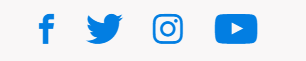

Bezoek het European Museum of the Year 2021
Vergeet niet voor je bezoek een noodzakelijk ticket met starttijd te reserveren. Ook als je in het bezit van een Museumkaart bent. Tot snel!
TicketsVergeet niet voor je bezoek een noodzakelijk ticket met starttijd te reserveren. Ook als je in het bezit van een Museumkaart bent. Tot snel!
TicketsNaturalis is het nationaal onderzoeksinstituut op het gebied van biodiversiteit. Onze wetenschappers zetten zich dagelijks in voor het beschrijven, begrijpen en behouden van biodiversiteit.
WetenschapOnze wetenschappelijke verzameling bewaren wij op een plek. Het is de basis voor het onderzoeken en het begrijpen van de wereldwijde biodiversiteit. Een deel ervan zie je terug in het nieuwe museum.
CollectieNaturalis is het nationaal onderzoeksinstituut op het gebied van biodiversiteit. Onze wetenschappers zetten zich dagelijks in voor het beschrijven, begrijpen en behouden van biodiversiteit.
Educatie
41.976.261
objecten in de collectie
8
nieuwe museumzalen
111
onderzoekers in dienst
Met een unieke combinatie van kennis, talenten en vaardigheden geven wij inhoud aan onze functies als rijksmuseum, academisch onderzoeksinstituut en erfgoedinstelling
Over onsNaturalis is het nationaal onderzoeksinstituut op het gebied van biodiversiteit. Onze wetenschappers zetten zich dagelijks in voor het beschrijven, begrijpen en behouden van biodiversiteit.
Wetenschappers en onderzoeksgroepenVolg hier het nieuws over het museum en het dagelijkse werk en nieuwe ontdekkingen van onze onderzoekers.
Nieuws en blogs 21 mei 2021
Met een unieke combinatie van kennis, talenten en vaardigheden geven wij inhoud aan onze functies als rijksmuseum, academisch onderzoeksinstituut en erfgoedinstelling
Over ons